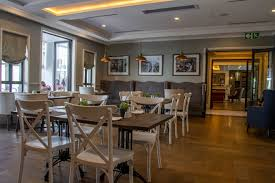
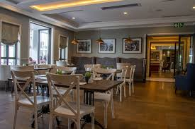

About us: Discover a trendy and vibrant dining experience at The Social, where modern cuisine meets a lively atmosphere. Known for its creative menu and chic setting, The Social offers a mix of contemporary dishes, from fresh salads and gourmet burgers to sushi and artisanal pizzas. With its stylish décor and outdoor seating, The Social is the perfect place to relax with friends, enjoy a delicious meal, or sip on signature cocktails.
Working Hours:
The Social is popular for its upbeat ambiance and carefully curated menu that blends international flavors with local ingredients. The bar serves a wide range of handcrafted cocktails, wines, and craft beers, making it an ideal spot for casual get-togethers, after-work drinks, or celebratory dinners. With a focus on quality, creativity, and great service, The Social provides a fun and memorable dining experience for everyone.